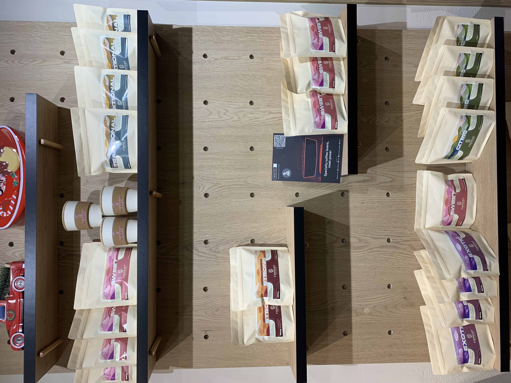
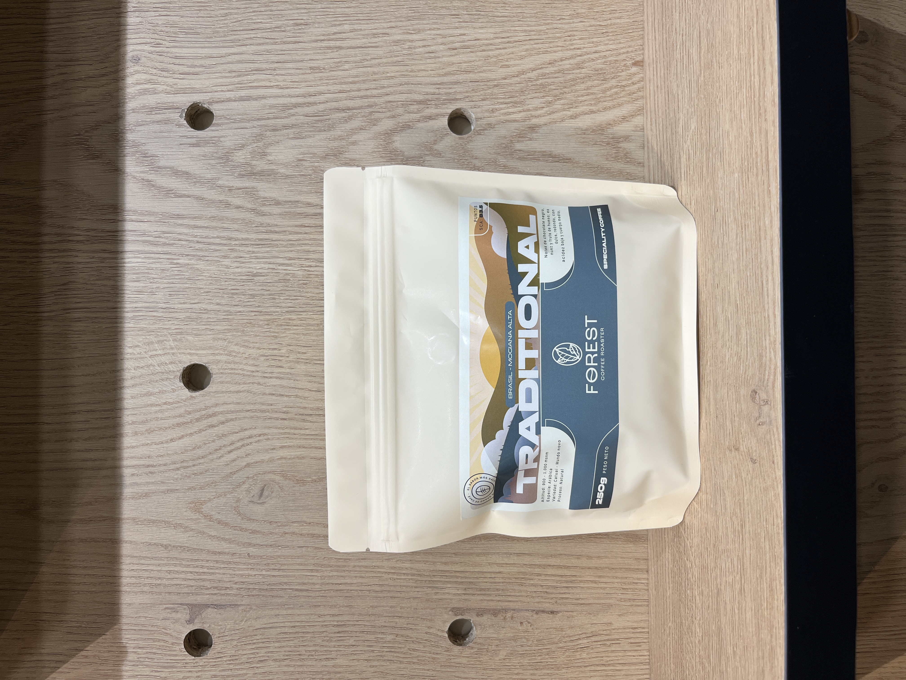
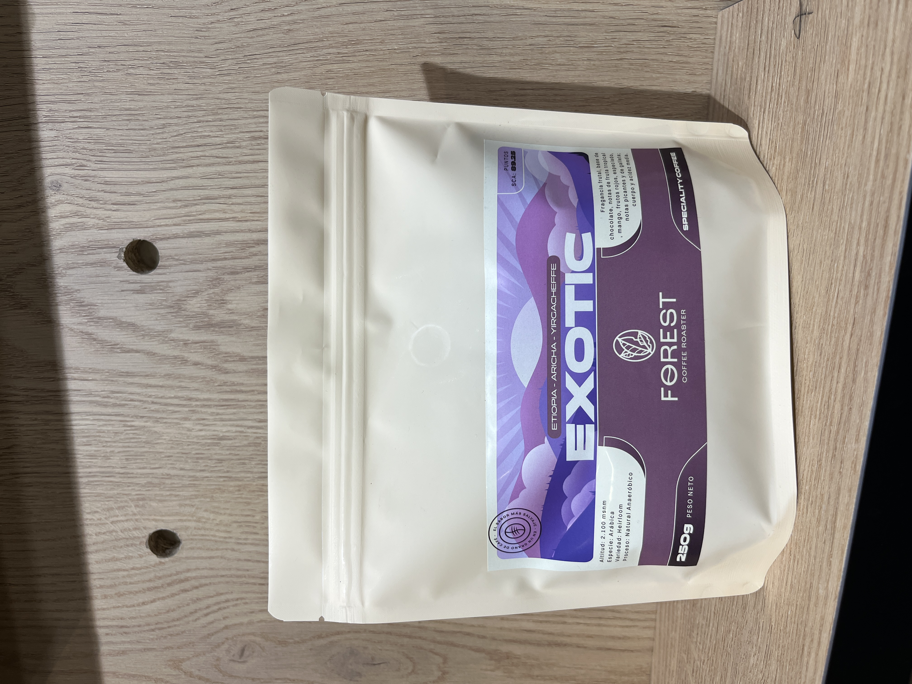
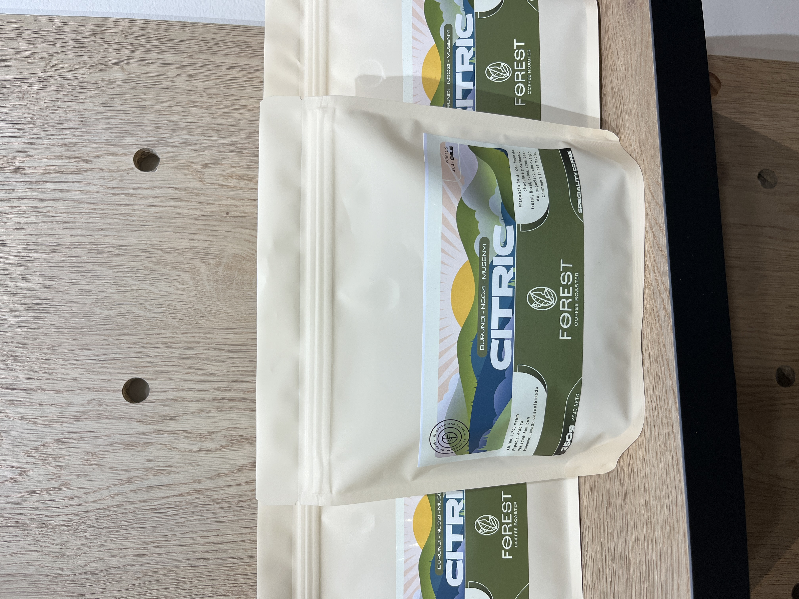
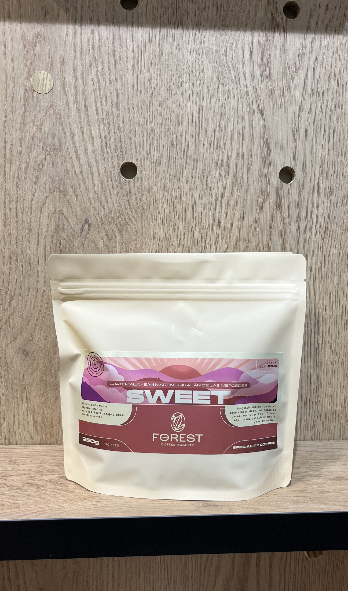

Cada taza cuenta una historia
Somos una microtostadora donde lo que hace nuestro café único es la trazabilidad absoluta. Nuestro barista, campeón nacional con más de 10 años de experiencia, supervisa cada tueste.
Creemos que el café de especialidad no es una moda, sino un acto de servicio y dedicación.
Nuestra Selección
Granos seleccionados por su perfil sensorial único

El Tradicional
Café equilibrado y reconfortante, con notas de chocolate suave, nueces tostadas y caramelo discreto. Acidez moderada, cuerpo medio cremoso y final dulce, limpio y prolongado, que evoca la esencia del café clásico.

Exótico Floral
Perfil exótico y complejo, con notas florales intensas, frutas tropicales inusuales y dulzor limpio. Acidez jugosa, textura sedosa y final largo con toques especiados sutiles. Una taza fuera de lo tradicional.

Vibrante Cítrico
Café vibrante y luminoso, con notas cítricas de limón, mandarina y bergamota. Acidez brillante, dulzura ligera a miel clara, cuerpo sedoso y final refrescante y persistente. Ideal para métodos filtrados.

Dulce Equilibrio
Perfil marcadamente dulce, con notas de azúcar moreno, caramelo y panela. Acidez suave y jugosa, cuerpo sedoso y retrogusto a miel clara y cacao dulce, ideal para paladares que buscan cafés golosos y equilibrados.